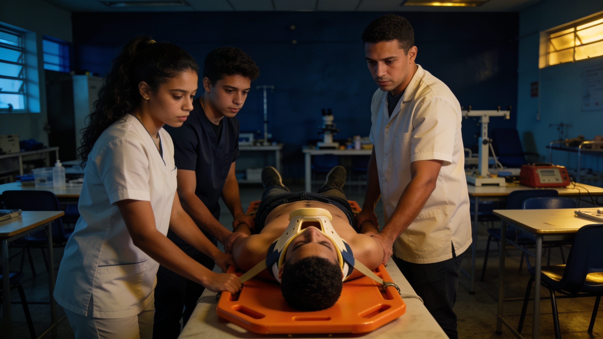
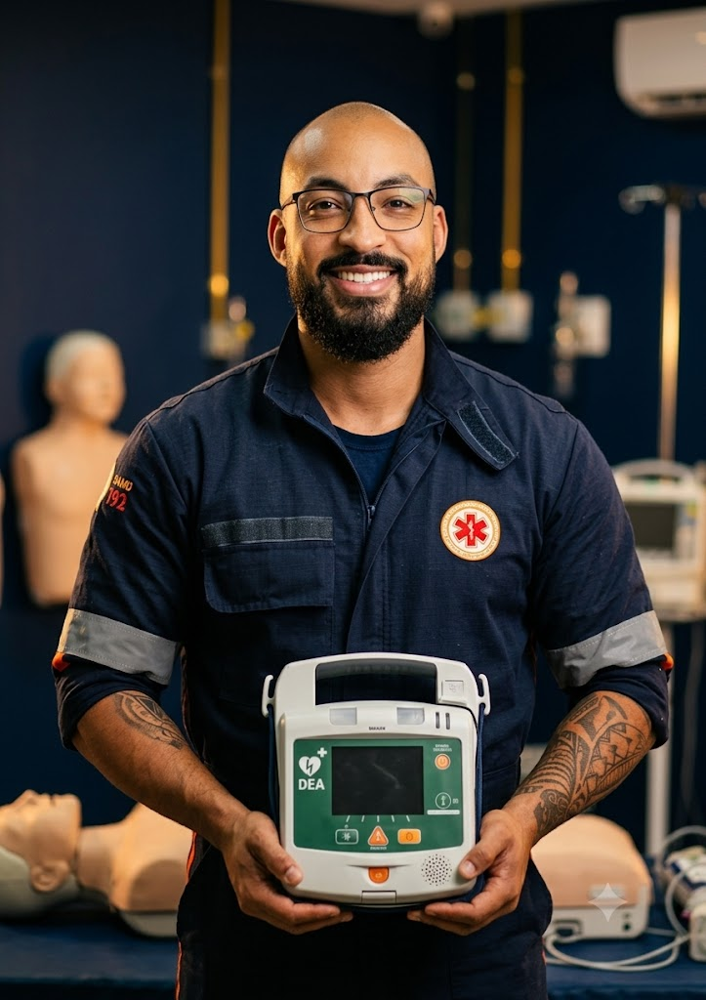

A formação de Socorrista APH mais prática da Baixada Fluminense: manequins, DEA, prancha e simulações reais, com instrutores enfermeiros que vivem a emergência todos os dias.
Nada de decoreba: cada habilidade é treinada na prática até virar reflexo — porque na emergência não dá tempo de pensar duas vezes.
Reanimação em adulto, criança e bebê + uso do desfibrilador — a manobra que mais salva vidas.
Hemorragias, fraturas, queimaduras e acidentes com múltiplas vítimas (método START).
Prancha, colar cervical, bandagens e a retirada segura da vítima até a ambulância.
Infarto, AVC, convulsão, engasgo (OVACE) e parto de emergência — protocolo por protocolo.
Zona quente, morna e fria, EPIs e avaliação de riscos — proteger você antes de proteger a vítima.
Cenários completos do acionamento à entrega da vítima — com pressão de tempo, como na rua.

O Socorrista APH é requisitado em ambulâncias, eventos, empresas e times de resgate. Com o certificado de 120h verificável, você mostra ao empregador exatamente o que sabe fazer.

As aulas são conduzidas por enfermeiros registrados no COREN-RJ e com vivência real em atendimento pré-hospitalar. Você aprende o que cai na prova e o que acontece na rua — os erros mais comuns, os atalhos que funcionam e a postura profissional que o mercado espera.
por ter frequentado integralmente o curso de SOCORRISTA — APH perfazendo um total de 120 (Cento e Vinte) horas.
Menos que um celular — e é uma profissão para a vida inteira. Sua matrícula inclui:
de [R$ 0.000] por
[12]x de [R$ 000]ou [R$ 0.000] à vista no PIX
"Entrei sem saber nada da área. Saí fazendo RCP com segurança e hoje trabalho em ambulância de eventos. A prática fez toda a diferença."
"O instrutor mostra o que acontece de verdade na rua. Consegui minha primeira vaga em remoção um mês depois de formada."
"Fiz o curso para a brigada da empresa e acabei mudando de carreira. O certificado com QR code passou direto na entrevista."
Não. O curso forma você do zero: começa pelos fundamentos e avança até os protocolos completos de APH. É a porta de entrada para a área da saúde.
Sim. O certificado informa as 120 horas e traz QR code de verificação — o empregador confirma a autenticidade na hora. Nossos alunos atuam em ambulâncias, eventos, clínicas e remoções.
100% presenciais na unidade da Magma em Olinda, Nilópolis (RJ), aos sábados das 09h às 16h. Recebemos alunos de Nova Iguaçu, Mesquita, São João de Meriti, Belford Roxo, Queimados e Duque de Caxias.
Nossa equipe monta com você um plano de reposição para não perder conteúdo — fale com a coordenação pelo WhatsApp.
Cartão de crédito parcelado, PIX à vista com desconto ou boleto. Grupos e ex-alunos têm condições especiais — chame no WhatsApp e consulte.
Deixe seu nome e receba no WhatsApp o calendário completo, valores e a condição de matrícula antecipada — sem compromisso.